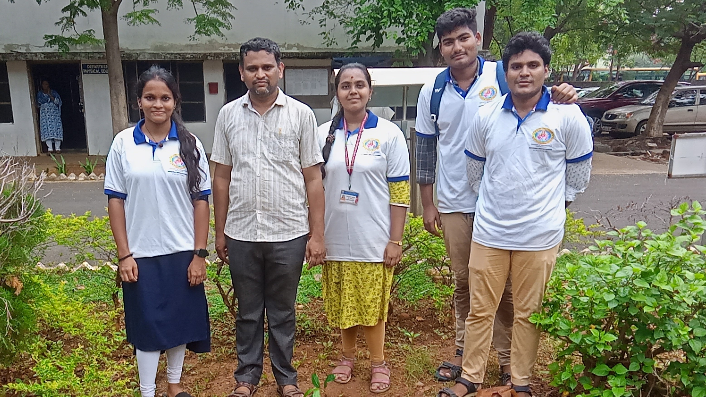

Not
Me
But
YOU!
NSS GVPCE(A) is a student-driven platform for community service, leadership, and social responsibility. It nurtures socially conscious professionals committed to meaningful, long-term societal impact.

About Us
NSS GVPCE-(A)
On September 24, 1969, the then Union Education Minister Dr. V. K. R. V. Rao, launched the NSS programme in 37 universities involving 40,000 students. The motto of National Service Scheme is "NOT ME BUT YOU" Principal elements of NSS: There are four principal elements in the NSS programme process; they are Students, Teachers, Community and the programme. 'Education through Service' is the purpose of the NSS.
The National Service Scheme (NSS) is a Central Sector Scheme of Government of India, Ministry of Youth Affairs & Sports. It provides opportunity to the student youth of 11th & 12th Class of schools at +2 Board level and student youth of Technical Institution, Graduate & Post Graduate at colleges and University level of India to take part in various government led community service activities & programmes. The sole aim of the NSS is to provide hands on experience to young students in delivering community service.
Know MoreHelp and work for the benefit of people in and around GVPCE.
Uphold the need of selfless service.
Motivate students at GVPCE to indulge to nation building activities